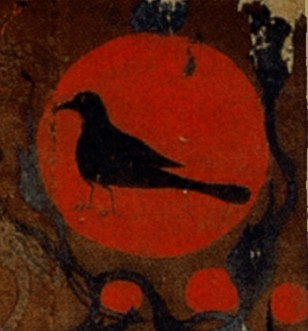
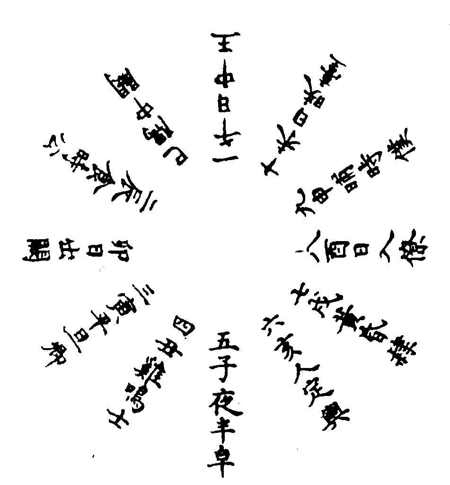
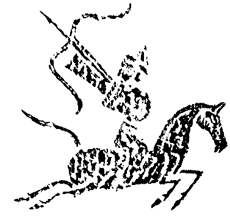

傳統上解釋明夷卦大致都以「夷」為傷，「明夷」即光明受傷，黑暗之義。
如《序卦》傳說：「晉者進也。進必有所傷，故受之以明夷，夷者傷也。」《雜卦傳》：「晉，晝也。明夷，誅也。」《雜卦傳》以「晉」為晝，則可推論明夷為「夜」、黑暗。王弼解明夷卦「為闇之主，在於上六」，此以明夷為闇，而上六為明夷卦之主爻。此外，就卦象來說，明夷卦為明在地中，黑暗、藏明之象，此亦符合傳統對明夷卦的闡釋。
六五「箕子之明夷，利貞」，則讓易學家進一步認為明夷（黑暗）講的是商紂無道的故事。
然而這樣的解釋放在明夷卦初九「明夷于飛，垂其翼，君子于行，三日不食」卻是有些彆扭，不大符合語意邏輯。

「明夷」到底是什麼鳥？
特別是當我們在讀《詩經》的時候可發現到，「xx于飛」是非常常見的語法，《詩經》中要講什麼鳥在飛都是這樣表達的，例如：
〈葛覃〉
黃鳥于飛，集于灌木，其鳴喈喈。
〈燕燕〉
燕燕于飛，頡之頏之。之子于歸，遠于將之。
燕燕于飛，下上其音。之子于歸，遠送于南。
〈雄雉〉
雄雉于飛，泄泄其羽。我之懷矣，自詒伊阻。
雄雉于飛，下上其音。展矣君子，實勞我心。
〈東山〉
倉庚于飛，熠燿其羽。
〈鴻鴈〉
鴻鴈于飛，肅肅其羽。之子于征，劬勞于野。爰及矜人，哀此鰥寡。
鴻鴈于飛，集于中澤。之子于垣，百堵皆作。雖則劬勞，其究安宅。
鴻鴈于飛，哀鳴嗸嗸。維此哲人，謂我劬勞。維彼愚人，謂我宣驕。
〈鴛鴦〉
鴛鴦于飛，畢之羅之。君子萬年，福祿宜之。
鴛鴦在梁，戢其左翼。君子萬年，宜其遐福。
〈卷阿〉
鳳凰于飛，翽翽其羽，亦集爰止。藹藹王多吉士，維君子使，媚于天子。
鳳凰于飛，翽翽其羽，亦傅于天。藹藹王多吉人，維君子命，媚于庶人。
〈振鷺〉
振鷺于飛，于彼西雝，我客戾止，亦有斯容。
同樣的表達方式在田氏代齊的故事中也曾出現過，齊國懿氏想把女兒嫁給陳完時為此而占卜，結果大吉，曰：
鳳皇于飛，和鳴鏘鏘；有媯之後，將育于姜。五世其昌，並于正卿。八世之後，莫之與京。
我們若再依帛書版易經將明夷初九修改為「明夷于飛，垂其左翼；君子于行，三日不食」（按：帛書版中多了一「左」字），再比對以上的詩體，幾乎如出一轍。
因此學者據以持論認為「明夷」就是一種鳥，所以才會說「明夷于飛」。若再與「鳳皇于飛，和鳴鏘鏘」放在一起看更可進一步發現，鳳凰與明夷的出現，分別是吉祥與凶災的兩種不同徵兆。
至於具體來說，明夷又是什麼鳥？高亨經過了許多文字上的考證認為「明夷」就是「鳴雉」，也就是一種雉雞。（參考高亨所著《周易古經今注》）只是，依高亨考證，很難看出鳴雉為何是凶兆的理由說明。而且目前為止，學者的考證中也沒發現其他古書記載「明夷」或「鳴雉」的一些相關記載。李鏡池則解讀為「鳴鴺」，雖與高亨解讀不一樣，但和高亨的解讀有同樣的問題。
十日十時
不可否認的，高亨與李鏡池的解釋不但突破了傳統，而且給了我們一個很大的啟發，特別是當我們讀到《左傳》中卜楚丘對明夷卦的詭異解釋時。
《左傳．昭公五年》記載了叔孫豹初生時他的父親莊叔（叔孫得臣）為他的一生筮了一卦，得到了明夷之謙，也就是明夷卦初九爻變，當時叔孫得臣請教了卜楚丘，卜楚丘如此回答：
是將行，而歸為子祀。以讒人入，其名曰牛，卒以餒死。明夷，日也。日之數十，故有十時，亦當十位。自王已下，其二為公，其三為卿。日上其中，食日為二，旦日為三。明夷之謙，明而未融，其當旦乎，故曰「為子祀」。日之謙，當鳥，故曰「明夷于飛」。明而未融，故曰「垂其翼」。象日之動，故曰「君子于行」。當三在旦，故曰「三日不食」。離，火也；艮，山也。離為火，火焚山，山敗。於人為言，敗言為讒，故曰「有攸往，主人有言」，言必讒也。純離為牛，世亂讒勝，勝將適離，故曰「其名曰牛」。謙不足，飛不翔，垂不峻，翼不廣，故曰「其為子後乎」。吾子，亞卿也，抑少不終。
（按：叔孫豹就是說立德、立功、立言為「三不朽」的人。）
其中「明夷，日也。日之數十，故有十時，亦當十位」最為詭異。明夷傳統解釋明明是夜，怎變成日？這與傳統易學家的理解完全不一樣，一般學者在解釋這段話則是直接取了明夷卦下方的離卦，以離為日，就這樣囫圇帶過。卻不解決「明夷日也」與明夷卦義上的衝突。
至於「日之數十」更難理解了。
卜楚丘還進一步以「日之數十」說「故有十時，亦當十位」，意思是說，太陽總共有十個，所以有十個時間，且有相對應的十個位階。杜預注則說：「日中當王，食時當公，平旦為卿，雞鳴為士，夜半為皁，人定為輿，黃昏為隸，日入為僚，晡時為僕，日昳為臺。隅中日出，闕不在第，尊王公，曠其位。」
如何理解杜預注，可參考日行十二位圖。從該圖可以看出一個問題，中國自古即將一日分為子丑寅卯辰巳午未申酉戌亥十二時辰。雖然十二地支作為紀日之用早於甲骨文中就可見到，其確定的應用年代至少可回溯到殷商，但是用於紀時，卻不知從什麼時候開始。杜預的注雖然似乎可以解釋「故有十時，亦當十位」，也就是以一日的十個時間點來配合人間的十個階級，但又說這十二時辰中有兩個不能算數....這實在是相當奇怪。
或許，十時（十個時刻）是古代另一種以太陽位置來表達時間的方式，類似於我們現在以黎明、上午、日正當中、下午、黃昏、日落、夜晚、深夜....表達一天的不同時刻，因為原本就不是很精確，甚至完全不成系統，所以也不盡然要堅持於卜楚丘的「十時」之說。當然，也有可能真的有十時的系統，但不知什麼原因而失傳或被十二地支的表達方式所取代了。
顧炎武《日知錄卷二十》〈古無一日分為十二時〉一章則對此有詳細考證，只不過他竟以杜預注而認為「一日分為十二，始見於此」，實在是相當奇怪的論斷，因為杜預注明明只是以十二干支的系統來類比於「十日十時」系統來解釋「十日十時」。
此外，我們從徐中舒主編的《甲骨文字典》日字的解釋中見到了幾個紀時名辭可能與此有關，只可惜只湊到了四個，不足十個，但總算比卜楚丘所提到的三個多了一個，或可由此略微闚見，至少在商周時就算有「十日十時」理應也不是一個很有系統或嚴格的表達方式：
中日：日正處於南北方向綫上之時，殷紀時稱中日，相當於正午之時，或亦作日中。
昃日：中日已過，日已偏斜之時為昃日。約為後世之未時前後。
湄日：或作眉日，即昧日，即旦日也。
日明：猶天亮之時也。
不過，這裡有些扯遠了。
這裡真正引起我興趣的是「明夷日也，日之數十」這個說法到底從何而來？
{kind=link}
十日與金烏傳說
卜楚丘的「明夷日也，日之數十」還有「明夷是一種鳥」（日之謙，當鳥，故曰「明夷于飛」。明而未融，故曰「垂其翼」）這兩件事關連起來讓我想到了后羿射日的神話及「日中烏見」的天文異象。
中國自古有個傳說：太陽裡住著金烏，而月亮中則有隻蟾蜍。
太陽中的金烏或叫赤烏、三足烏，「金烏」也可說是古代「太陽」的代名辭。金烏即是太陽，而太陽有十個。
那麼「明夷日也，日之數十」就不難理解了，明夷或許就是那金烏鳥，或者至少與金烏鳥可能有關，日之數十就是十個太陽的傳說。
另一方面，我們也發現，經文許多地方也和此神話內容若合符節，或許可做為未來注解易經明夷卦的新解。
至於為何叫「明夷」？以下我們將從神話及現代天文學的發現來找出理由。
《說文》：「日，實也，太陽之精，不虧。象形。凡日之屬皆从日。」段玉裁注：「蓋象中有烏。」《淮南子．精神訓》：「日中有踆烏，而月中有蟾蜍。」（踆為蹲）《論衡．說日》「儒者曰：日中有三足烏，月中有兔、蟾蜍。」另張衡《靈憲》說得更詳細：
日者，陽精之宗。積而成鳥，象烏而有三趾。陽之類，其數奇。月者，陰精之宗。積而成獸，象兔。陰之類，其數耦。其後有馮焉者。羿請無死之藥於西王母，姮娥竊之以奔月。將往，枚筮之於有黃，有黃占之曰：「吉。翩翩歸妹，獨將西行，逢天晦芒，毋驚毋恐，後其大昌。」姮娥遂託身於月，是爲蟾蠩。
關於金烏，古文之中有著不同的描繪，有人說祂是「太陽之精」，有人說祂是西王母的使者，有人說是羲和所生的十個子女。《山海經．大荒西經》：「東南海之外，甘水之間，有羲和之國，有女子名曰羲和，方日浴于甘淵。羲和者，帝俊之妻，生十日。」
我們可以將金烏視為太陽的精靈，或者是每天駕御太陽出去與回來的御日者，有些像是希臘神話中太陽神阿波羅駕著馬車橫越天空一樣，差別在於希臘的太陽只有一個，而中國的太陽原本有十個，也就是十隻金烏輪流當差。而這十隻金烏就住在東方的一顆扶桑樹上，其中一隻當天負責駕日的金烏在最上，而其餘九隻則棲息在下。這也是《山海經．海外東經》所記載的：「湯谷上有扶桑，十日所浴，在黑齒北。居水中，有大木，九日居下枝，一日居上枝。」《淮南子．地形訓》也稱：「扶木在陽州，日之所曊。建木在都廣，眾帝所自上下，日中無景，呼而無響，蓋天地之中也。若木在建木西，末有十日，其華照下地。」
每天的「晨明」時刻，祂們從暘谷出來，在咸池中洗澡。然後在「朏明」時刻（朏原為月初出而未盛，這裡意指太陽初明），棲息在扶桑樹上，準備飛行。飛到曲阿的時候就是「朝明」時刻，飛到曾泉上空時就是「早食」。接著飛到桑野，是「宴食」時刻，飛到衡陽就是「禺中」（東南西北為四正位，東南、東北、西南，西北等位置則為四禺，禺中指的是四禺正中，大概是東方45度角），到昆吾時就是「正中」，也就是日正當中的時候。接著在「小遷」時刻飛到鳥次，在晡時飛到悲谷。飛到女紀時為「大遷」，經過泉隅時為「高春」，停在連石時就是「下春」。接著停止在羲和，在六螭休息，此時叫「懸車」。逼近到虞泉時，叫做「黃昏」時刻。當它很疲憊的到達蒙谷時，就是「定昏」時刻。
這整個過程詳細記載在《淮南子．天文訓》：
日出於暘谷，浴于咸池，拂于扶桑，是謂晨明。登于扶桑之上，爰始將行，是謂朏明。至于曲阿，是謂朝明。臨于曾泉，是謂早食。次于桑野，是謂宴食。臻於衡陽，是謂禺中，對于昆吾，是謂正中。靡于鳥次，是謂小遷。至于悲谷，是謂晡時。回于女紀，是謂大遷。經于泉隅，是謂高春。頓于連石，是謂下春，爰止羲和，爰息六螭，是謂懸車。薄于虞泉，是謂黃昏。渝于蒙谷，是謂定昏。
{kind=link}
在馬王堆一號墓和三號墓出土的兩張不同 T形帛畫上，都畫有著這個傳說，其中一號墓的帛畫有更多的細節。其左上方為一彎明月，上有蟾蜍，而右上方則為一太陽，太陽中有一金烏。下方的扶桑則卦著八個太陽。這個畫與傳說中的差異在於其金烏只有二隻腳，所以很可能最早的金烏其實只有二足。有人認為這是因為東漢之後把「摻足烏」（三同參，摻為纖細之意）誤解為三足。而我們從《靈憲》的「烏而有三趾」則可猜測，或許「三足」是從「三趾」而來。
帛畫與神話的另一差異是，畫中所見的太陽只有九個，少了一個。不過，其偏向中間之處有一個半掩像太陽的半圓朱色，與左半一邊對稱之處亦有一顆，似乎學者並未計算此靠向中間的球體，若計算進去，其實也是總共有十顆太陽的。另一個合理的解釋則是，一顆「當差」去還沒回來，因此在扶桑樹的太陽當然隨時都只有九個。
傳說中，在堯的時代，有那麼一天，這十個太陽一起出來了，因此將大地燒焦，生靈塗碳，於是堯帝命后羿將九個太陽射下，留了最後一個，也是今天我們看到的那個太陽。《楚辭．天問》：「羿焉彃日？烏焉解羽？」《焦氏易林》除了有多處提到「羿張烏號」之外，履之履：「十烏俱飛，羿得九雌。雄雖得全，且驚不危。」
另《淮南子．本經訓》則有更詳細的說明：
逮至堯之時，十日並出，焦禾稼，殺草木，而民無所食。猰貐、鑿齒、九嬰、大風、封豨、修蛇皆為民害。堯乃使羿誅鑿齒于疇華之野，殺九嬰于凶水之上，繳大風於青丘之澤，上射十日而下殺猰貐，斷修蛇於洞庭，禽封豨于桑林，萬民皆喜，置堯以為天子。
彗星撞地球
現在許多的天文研究都認為，古代講的金烏，是源自於太陽黑子的觀察，諸如此類的見解，大家只要同時在Google輸入「金烏, 黑子」的關鍵字，就可找到很多對天文學有研究的人所寫的文章。
另一方面，也有人提出易經豐卦中的「日中見斗」、「日中見沬」也都是黑子活動的記載。
而后羿射日的神話則比較曲折，根據中央大學地球科學院院長趙丰的研究認為，這是古代一場彗星撞地球的天文事件，而且發生在東方。詳細內容可參考「羿射十日」事件始末報告一文，以下摘錄其大要：
我把當時的場景還原給諸位：那天早上，太陽已經半高掛，東方從海面低水平角度陸續出現了一、二、三⋯⋯九個小太陽般的火球，像大鳥般飛行而來。頓時酷熱難當，禾稼草木都焦死了。人速報帝堯，英明的堯馬上命令神射手后羿發箭。九個小太陽也就一一在遠處隕落，隕落之處一片焦黑泥爛。
⋯⋯
把修梅克–李維彗星事件的規模縮小萬倍，或把通古斯卡事件一分為九，我們差不多可以想像帝堯當年那場驚天動地的場景。那一次，一顆不算小的彗星闖入地球範圍，先遭到解體成為九塊，繼而一一隕落撞擊在中國的東部某地。對之無能為力的先民們，除了向它射箭之外，倒為後人留下了一則代代相傳的傳奇神話；主角也很自然地從無法理解的十日事件轉變成英雄人物后羿。
羿射十日的所在，那所謂十日之國的地理位置，應該位於山東半島東海之濱，那是后羿所屬的古代東夷人的居地；而《山海經》所說的羲和之國、扶桑、湯谷也都是指這地區。今天我們能不能找尋出當年連串撞擊的地面痕跡呢？恐怕不樂觀。九日隕落之處當時呈現一片焦黑泥爛，但是似乎沒有實體的殘留，就如同通古斯卡事件沒有留下任何可辨認的坑洞式地面痕跡。
日中烏見
如果后羿射日神話的背景是源自於上古的「彗星撞地球」災難，那麼「日中烏見」被視為災難的異象也就理所當然了。不僅如此，明夷卦的「明夷于飛，垂其翼」也有了清楚的圖象與合理的解釋，很可能描述的是與「后羿射日」傳說中同樣的一場災難。
首先我們先看「日中烏見」。
就現代天文學的觀點來看，這可能是太陽黑子極大期的異象。而在古代，可能因為那場「十日並出」的彗星撞地球災難，而讓人看到了住在太陽裡的金烏出現時就聯想到災難的發生，而這種災難一定是一片焦土，生靈塗碳的大型災難。
《開元占經．日占》中就收錄有「日中烏現」的異象，多主國家的重大災難，甚至國破君亡：
- 《洛書》曰：日中有烏見，名曰陰德，不出六十日，兵出；從其所向伐之勝，若有國主死。（按《抱樸子》曰：吳赤烏十三年，日中烏見，三足。然魏蜀不見，孫權死。）
- 京氏曰：日中有烏見主失明，為政者亂。
- 《黃帝》曰：日中三足烏，見者，其所居分野有白衣會，大旱，赤地。三足烏出，住日外者，天下大國受其災，戴麻森森，哭聲吟吟。
- 《太公陰秘》曰：日中烏見者，君咎；雙烏見者，將相逆入，鬪者主出走，烏動者大饑，水旱不時，人民流在他鄉。救之法：實倉庫、舉賢士，遠佞邪、察後宮，任有道，赦不從，則災消矣。
- 《孝經內記圖》曰：日無暈而烏見，所宿之國亡絕。（王隱《晉書惠紀》曰：｢元康六年六月日中若飛燕者，積數日，後有湣懷太子事。）
- 《日傍氣圖》曰：日中烏見，其國君死、期三年。
- 《荊州占》曰：常以月十四日，候日，中有氣如飛鳥，其地無居者。
- 京房《災異》曰：日月薄赤，見日中烏，將軍出旌，舉此不詳，必亡。
很巧的是，「日中烏現」的預測，和我們對於明夷卦的吉凶理解也是相當類似而一致的，差別只在於「明夷」卦易學家通常都是以諸如商周之世，國政昏亂，天下無道的比喻來理解。
回到明夷卦
綜合以上的研究，我們再回到明夷卦，那麼過去對於明夷的諸多疑問，還有許多看似無關而衝突的觀點，就全部都有解了。
「明夷」--隕落的光明，夷滅的光體，墜落的太陽，描繪的正是彗星撞地球時從天際間出現的流星雨。由於飛過天際的流星雨形體相當巨大而明亮，因此上古先民將其理解為「太陽」。或許金烏一辭是後來才發展出來的，或許在此之前就有，但無論如何，這對古人來說的的確確是一個會飛的太陽，所以用「明夷于飛，垂其翼」來描述，將其視為飛鳥。而這也是卜楚丘所說的「明夷日也，日之數十」。
而上六「不明晦，初登于天，後入于地」則是趙院長說的：「東方從海面低水平角度陸續出現了一、二、三⋯⋯九個小太陽般的火球，像大鳥般飛行而來。頓時酷熱難當，禾稼草木都焦死了。人速報帝堯，英明的堯馬上命令神射手后羿發箭。九個小太陽也就一一在遠處隕落，隕落之處一片焦黑泥爛。」
六二「明夷，夷于左股，用拯馬壯吉」，九三「明夷于南狩，得其大首」，六四「入于左腹，獲明夷之心，于出門庭」則有些類似於后羿射日的描繪，說的是那位當初奉命射日的神射手一一將「明夷」給射下的過程。
六五「箕子之明夷」講的或許是箕子前往視查「明夷」的災情。後世易學家都以此段爻辭推論認為明夷卦講的是商紂無道。當然的，我們也可據以推論這個彗星撞地球事件發生在商紂的時期，說不定這場災難也是造成殷商王朝快速隕落的原因。
那堯帝命后羿又是怎麼一回事呢？
這應該是戰國之後，甚至是漢代開始依據上古的神話所編造出來的劇情。戰國及漢代儒者為了建立堯舜禹湯文武周公孔子等一脈相傳的聖人思想所編造出的。
我們可以舉一例子，像《繫辭傳》說「黃帝堯舜，垂衣裳而天下治，蓋取諸乾坤。刳木為舟，剡木為楫，舟楫之利，以濟不通，致遠以利天下，蓋取諸渙。服牛乘馬，引重致遠，以利天下，蓋取諸隨」，這是把許多人類文明中的發明歸功於堯舜。顧頡剛先生在《周易卦爻辭中的故事中》即考證出，這裡所提到的「服牛乘馬」的發明者，也就是第一個馴服牛馬幫人拉車者，是殷商時的王亥，或者至少可以說，在更早之前的傳說裡，王亥才是「服牛乘馬」的發明者。
從卜楚丘順口講出的「明夷日也，日之數十」，可大略猜測出，這場發生於商紂時期的災難，在春秋時的卜人還記得，所以講得相當順口而理所當然。但後來這個事件被改編為堯舜命后羿射日的故事之後，反讓後人忘了其本始的故事。
至於金烏，和堯帝一樣，都是從這個故事原型中再發展而後出的角色，從「明夷于飛」這樣的用語也可看出由於彗星撞地球事件，而讓先民將「太陽」理解為會飛的鳥，再加上太陽黑子，還有彗星撞地球之後的殘破現場，讓先民認為太陽就是金烏，而金烏的出現（日中烏見）就是大災難的徵兆。
有個問題
六二「明夷，夷于左股，用拯馬壯吉」，九三「明夷于南狩，得其大首」，六四「入于左腹，獲明夷之心，于出門庭」則有些類似於后羿射日的描繪，說的是那位當初奉命射日的神射手一一將「明夷」給射下的過程
易經中有很多卦是引用古代的歷史故事，但是我有點不懂是為什麼要這樣做?如此卦所示，這種方法對我而言有時反而更難理解，如若後代不知道這段故事，那更是不知所芸了。
這就像老年人的兒時記憶
神話故事所記載的過去，就有如老年人在回憶童年時光一樣，往往很糢糊而真假難斷。
你不能說那些都是假的不存在的，但卻只能約略的了解老人家曾經歷過那些事，就是無法鉤勒出許多情節，有時候甚至光怪陸離，矛盾衝突....都可能會有的。
所以既使我們考證出明夷講的就是商朝慧星撞地球的事件，從六二至六四的文字也只是能夠約略看出好像找了一個善射者去射那些會飛的太陽。
易經原本文字就很隱晦，再加上細節也都缺乏，所以閱讀這些文字可能需要更多的想像與聯想了，我想看不懂易經的許多文字是正常的（包括這一段）...就像朱熹在注解易經，也幾次直接說「未詳」（就是「我看不懂」的意思）。朱熹的虛心，還有學問之嚴謹，反而從他勇於說他自己不懂而更加彰顯而讓我佩服景仰。
這裡我要舉出另一個被考證出的故事為例，顧頡剛考證出「喪羊於易」、「喪牛於易」，講的是殷商有名的一位先祖叫王亥被流放於「有易」國的故事，但王亥這個人在中國三千多年的歷史裡幾乎消失了，會被發現是因為當代甲骨文研究。所以既使考證出這個故事，也發現到易經中某些經文與此有關，但仍是很難將這個故事重建完成－－簡單說，當知道有這個故事之後，我們才發現到不知道的遠比知道的還多；只有增加了更多的謎團，還是無法解答許多問題。但是，至少我們知道「喪羊於易」不該再像過去一樣把這個「易」理解為輕鬆容易的易了。
明夷的故事也是一樣的道理。
精彩的推理
讀完整篇，推理得很精彩與論證資料好豐富，經典啊!!
猶記得曾經在動物星球的英倫野生動物篇裡看過一段，烏鴉會啣晶亮之物(包含有火炭的樹枝)回巢(烏鴉會築巢在農莊的閣樓裡)，常因這習性將火種帶入而造成農舍莫名其妙發生火災。
http://fhk-dbbook.nmns.edu.tw/fhkbook/hist/hist.asp-sq_no=98.htm
這個連結也提到：本草綱目亦云：「烏鴉，善避矰繳。又蜀徼有火鴉能銜火。」
所以，明夷于飛，在下倒覺得不需要特別推論到彗星或黑子，畢竟烏鴉做為不祥之鳥幾乎古今中外皆然。
更重要的是：明夷從初六到上六的爻辭，卦象所示的 地-火-明夷，之間似也沒多大關聯。倒是另一篇"現代小明夷"引用"《老子》：視之不見名曰夷，在下覺得較合理。 「視之不見名曰夷」視而不見最容易發生在二種狀況，一是夜間，一是暗室(或山洞)。夜間或暗室舉火炬，以照明原不可見之物，是謂明夷，這也是古今中外皆然的事。
以古今中外皆然世所常見之事作為「卦」遍於易經。只似乎幾千年代沒有在意而已!!
純屬個人見解，如果冒犯也請見諒。
知命
我命由我不由天